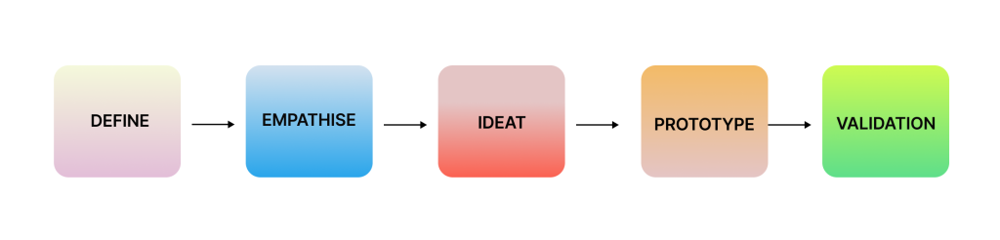
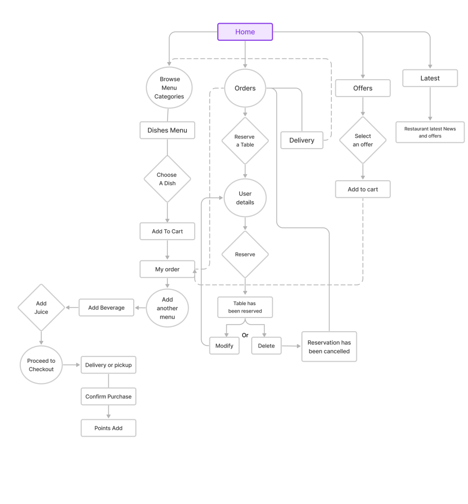
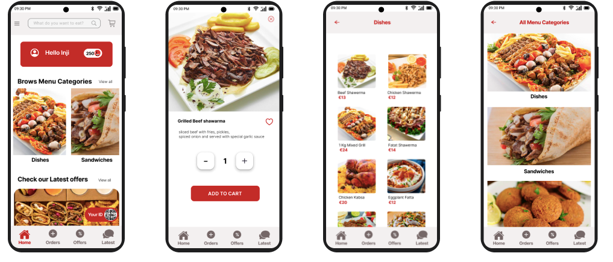
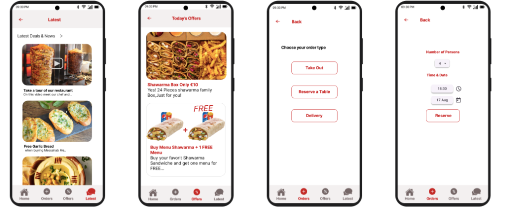
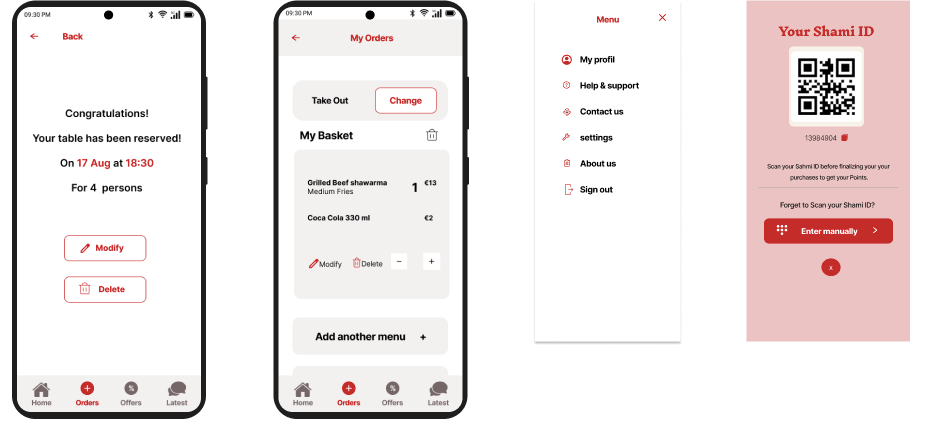

Inji Alasttal
Shami - Restaurant Mobile App
Challenge: Build an app and create an interface that not only meets but exceeds user expectations,
ensuring a seamless and enjoyable experience throughout their journey within the app.
Deliverables: Strategy. User research. Persona. Task flows. Sketches. Prototype.
Role: UX Designer

Shami is a Middle Eastern Restaurant Mobile App,
that offers various services such as reserving a table or delivering food.
Problem
Many people have difficulty finding a place in the restaurant to enjoy their meals at the weekend. In addition, there is a working mother trying after a long day to provide a warm meal for her family.
Solution
Design an app for a person’s needs so they could easily book their table for a family gathering, order their favorite food as delivery, or even pick up the food faster after a long working day. The Shami application was designed to address these challenges.
Empathise
I have conducted extensive research to understand the specific needs of users. By leveraging the personas I carefully designed, I gained insight into the wants and requirements of the user base. It is through this empathetic, people-informed approach that I conceptualize and develop my application. This process allowed me to connect with users on a deeper level, ensuring that their needs and desires were not only identified, but also effectively addressed in the app’s design and functionality.
User Research and Create Persona:
People like to deliver and prefer order a delivery food from their prefer restaurant to stay at home with friends for dinner. Although many people are very busy, they still love to arrange time for a cosy weekend family gathering. The first mother is a hard worker and have no time to cook and want to pick up food rapidly for dinner with her husband. Based on these findings, we create three persona who are our target users
IDEATION
with my paper wireframe (sketches) prepared, I’m ready to start on the next phase of the UX design process by creating the low-fidelity prototype and conducting tests. During this stage, I conducted a thorough exploration of my local region, discovering several restaurants that boast effective and well received apps. This observation sparked an innovative idea to colect all the essential user needs into my mobile app.
Sketch (Paper Wireframe)
I create sketches with unique ideas, based on identified pain points, draw multiple options to test and see how to do so by initiating minimal changes to improve the user experience, then I start creating the IA (information architecture).
User Flow
An application user flow presents the steps a user typically goes through to order, reserve, or purchase.
PROTOTYPE
Low-Fi Prototype:
As I transition from the sketch to the low-fi prototype, I am confident in creating a more intuitive and user-friendly experience for my application, ultimately aiming to surpass the standards set by existing restaurant apps in the region. This iterative process, informed by both wireframing and real world observations, ensures a more robust and user focused design for my prototype.
Hi-Fi Prototype:
Moving forward with the process, I turned my Lo-Fi wireframe into Hi-Fi prototypes.I also added more interaction and features into the final High-Fi Prototype.
  Validation
Interactive Prototype:
I set up the interactive prototype to show the suggested flow when users search inside the app. I created an animated prototype that contains activities from choosing or reserving a table to completing the process.
Conclusion:
After two weeks dedicated to user research, meticulous analysis, and thoughtful design, I successfully gained profound insights into user preferences and identified key pain points. This UX case study has not only proven to be a challenging endeavor but also a highly rewarding experience, shaping my understanding of effective case study methodologies and the intricate process of app development. It has solidified my passion for UX design, and I find immense satisfaction in crafting solutions that cater to users’ needs. The journey has been enlightening, providing valuable lessons on the importance of empathy, usability, and the iterative nature of design. As I reflect on this experience, I am excited about the prospect of further refining my skills and knowledge in future studies. Overall, this case study has not only deepened my appreciation for user experience design but has also fueled my enthusiasm for continuous learning and improvement in this dynamic field. I am eager to apply these lessons and insights to future endeavors, contributing to the creation of more intuitive and user-centric digital experiences.